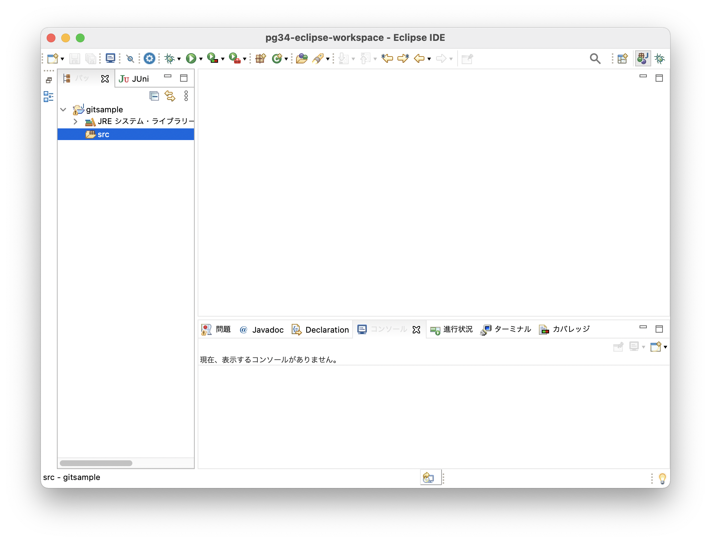
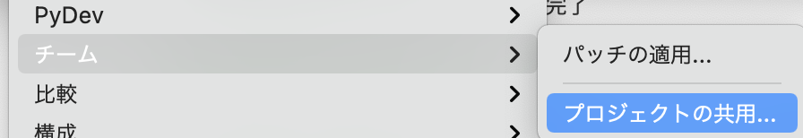
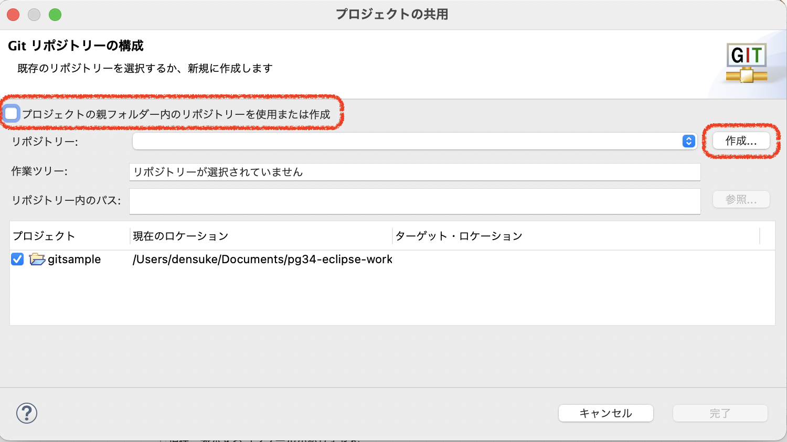
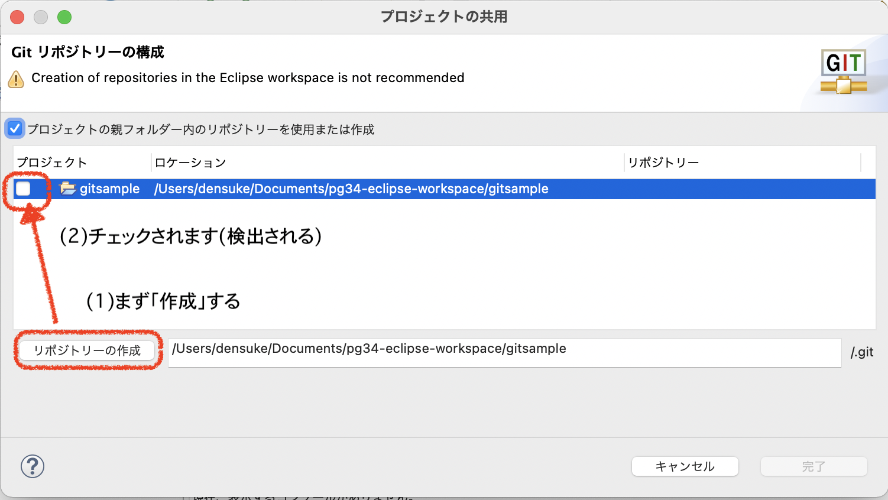
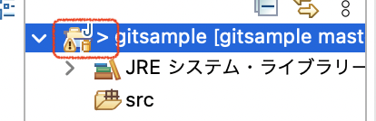
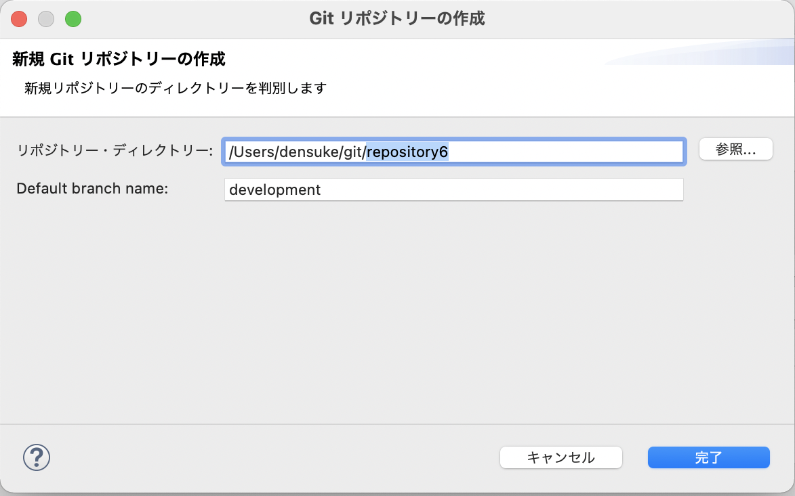
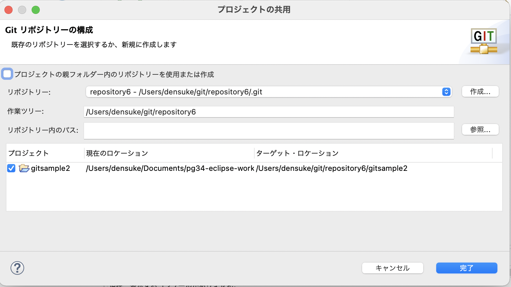
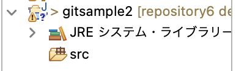

<!DOCTYPE html>
<html class="writer-html5" lang="ja" >
<head>
  <meta charset="utf-8" />
  
  <meta name="viewport" content="width=device-width, initial-scale=1.0" />
  
  <title>新規にリポジトリを作る &mdash; Gitもくもく勉強会(仮) 20210721 ドキュメント</title>
  

  
  <link rel="stylesheet" href="../_static/css/theme.css" type="text/css" />
  <link rel="stylesheet" href="../_static/pygments.css" type="text/css" />
  <link rel="stylesheet" href="../_static/pygments.css" type="text/css" />
  <link rel="stylesheet" href="../_static/css/theme.css" type="text/css" />

  
  

  
  

  

  
  <!--[if lt IE 9]>
    <script src="../_static/js/html5shiv.min.js"></script>
  <![endif]-->
  
    
      <script type="text/javascript" id="documentation_options" data-url_root="../" src="../_static/documentation_options.js"></script>
        <script data-url_root="../" id="documentation_options" src="../_static/documentation_options.js"></script>
        <script src="../_static/jquery.js"></script>
        <script src="../_static/underscore.js"></script>
        <script src="../_static/doctools.js"></script>
        <script src="../_static/translations.js"></script>
    
    <script type="text/javascript" src="../_static/js/theme.js"></script>

    
    <link rel="index" title="索引" href="../genindex.html" />
    <link rel="search" title="検索" href="../search.html" />
    <link rel="next" title="リポジトリ操作" href="add.html" />
    <link rel="prev" title="他の人のソースを取得する" href="clone.html" /> 
</head>

<body class="wy-body-for-nav">

   
  <div class="wy-grid-for-nav">
    
    <nav data-toggle="wy-nav-shift" class="wy-nav-side">
      <div class="wy-side-scroll">
        <div class="wy-side-nav-search" >
          

          
            <a href="../index.html" class="icon icon-home"> Gitもくもく勉強会(仮)
          

          
          </a>

          
            
            
          

          
<div role="search">
  <form id="rtd-search-form" class="wy-form" action="../search.html" method="get">
    <input type="text" name="q" placeholder="Search docs" />
    <input type="hidden" name="check_keywords" value="yes" />
    <input type="hidden" name="area" value="default" />
  </form>
</div>

          
        </div>

        
        <div class="wy-menu wy-menu-vertical" data-spy="affix" role="navigation" aria-label="main navigation">
          
            
            
              
            
            
              <p class="caption" role="heading"><span class="caption-text">Contents:</span></p>
<ul class="current">
<li class="toctree-l1"><a class="reference internal" href="../pre/index.html">はじめに</a></li>
<li class="toctree-l1"><a class="reference internal" href="../setup/index.html">環境構築</a></li>
<li class="toctree-l1"><a class="reference internal" href="../whats/index.html">gitってなんなのか</a></li>
<li class="toctree-l1 current"><a class="reference internal" href="index.html">レベル1: ローカルコミット</a><ul class="current">
<li class="toctree-l2"><a class="reference internal" href="clone.html">他の人のソースを取得する</a></li>
<li class="toctree-l2 current"><a class="current reference internal" href="#">新規にリポジトリを作る</a><ul>
<li class="toctree-l3"><a class="reference internal" href="#vscodeinit">vscodeにおけるinit</a><ul>
<li class="toctree-l4"><a class="reference internal" href="#git"><strong class="command">git</strong> で作成したディレクトリを開く</a></li>
<li class="toctree-l4"><a class="reference internal" href="#vscode">vscodeの中で初期化する</a></li>
</ul>
</li>
<li class="toctree-l3"><a class="reference internal" href="#eclipse">Eclipseの中で初期化する</a><ul>
<li class="toctree-l4"><a class="reference internal" href="#id2">「プロジェクトの親フォルダー内のリポジトリーを使用または作成」 のチェックを使う</a></li>
<li class="toctree-l4"><a class="reference internal" href="#id4">別の場所に用意されるリポジトリ専用エリアを使用する</a></li>
</ul>
</li>
</ul>
</li>
<li class="toctree-l2"><a class="reference internal" href="add.html">リポジトリ操作</a></li>
<li class="toctree-l2"><a class="reference internal" href="post.html">まとめ</a></li>
</ul>
</li>
<li class="toctree-l1"><a class="reference internal" href="../lv2/index.html">レベル2: ブランチ操作</a></li>
<li class="toctree-l1"><a class="reference internal" href="../lv3/index.html">レベル3: リポジトリ上での共有</a></li>
</ul>

            
          
        </div>
        
      </div>
    </nav>

    <section data-toggle="wy-nav-shift" class="wy-nav-content-wrap">

      
      <nav class="wy-nav-top" aria-label="top navigation">
        
          <i data-toggle="wy-nav-top" class="fa fa-bars"></i>
          <a href="../index.html">Gitもくもく勉強会(仮)</a>
        
      </nav>


      <div class="wy-nav-content">
        
        <div class="rst-content">
        
          


<div role="navigation" aria-label="breadcrumbs navigation">

  <ul class="wy-breadcrumbs">
    
      <li><a href="../index.html" class="icon icon-home"></a> &raquo;</li>
        
          <li><a href="index.html">レベル1: ローカルコミット</a> &raquo;</li>
        
      <li>新規にリポジトリを作る</li>
    
    
      <li class="wy-breadcrumbs-aside">
        
          
            <a href="../_sources/lv1/init.rst.txt" rel="nofollow"> View page source</a>
          
        
      </li>
    
  </ul>

  
  <hr/>
</div>
          <div role="main" class="document" itemscope="itemscope" itemtype="http://schema.org/Article">
           <div itemprop="articleBody">
            
  <div class="section" id="lv1-init">
<span id="id1"></span><h1>新規にリポジトリを作る<a class="headerlink" href="#lv1-init" title="このヘッドラインへのパーマリンク">¶</a></h1>
<p>適当なディレクトリを用意して、ローカルのリポジトリを作ってみましょう。</p>
<ol class="arabic simple">
<li><p><code class="file docutils literal notranslate"><span class="pre">my-hello-world</span></code> ディレクトリを作り、その中で端末を開きます</p></li>
<li><p><strong class="command">git init</strong> コマンドでリポジトリを生成します</p></li>
</ol>
<div class="literal-block-wrapper docutils container" id="id5">
<div class="code-block-caption"><span class="caption-text">リポジトリの作成(ローカル)</span><a class="headerlink" href="#id5" title="このコードへのパーマリンク">¶</a></div>
<div class="highlight-console notranslate"><div class="highlight"><pre><span></span><span class="gp">#</span> プロンプトはUNIX向けですが、PowerShellでも同じ操作ができます
<span class="gp">$</span> mkdir my-hello-world
<span class="gp">$</span> <span class="nb">cd</span> my-hello-world
<span class="gp">$</span> git init
<span class="go">Initialized empty Git repository in /private/tmp/my-hello-world/.git/</span>
</pre></div>
</div>
</div>
<p>このとき、initしたディレクトリにおいて、 <code class="file docutils literal notranslate"><span class="pre">.git</span></code> というディレクトリが作られます(UNIX環境であればドットファイルのため通常は見えない)。
このディレクトリの中は大きく2つの領域として使われ、全体として <strong>リポジトリ</strong> と呼ばれます。</p>
<div class="figure align-default" id="id6">

<p class="caption"><span class="caption-text">init直後の状態</span><a class="headerlink" href="#id6" title="この画像へのパーマリンク">¶</a></p>
</div>
<p><code class="file docutils literal notranslate"><span class="pre">.git</span></code> 自体をリポジトリと一般的に呼びますが…</p>
<dl class="simple">
<dt>リポジトリ域(狭義での「リポジトリ」)</dt><dd><p>コミットと呼ばれる変更不可のデータを納める領域、ローカルでコミットしているものもありますし、リモートから入ってくるものもあります。
各コミットは親コミットとのリンクを持ちます、</p>
</dd>
<dt>ステージ(キャッシュ)</dt><dd><p>コミットされる前の状態(ファイル群)が納められる領域、コミット後もコピーを(論理的に)持って差分抽出の補助も行います。</p>
</dd>
</dl>
<p>そしてディレクトリそのものは <strong>ワークツリー</strong> と呼びます。</p>
<p>次は、ファイルを配置してリポジトリに登録してみましょう。</p>
<div class="section" id="vscodeinit">
<h2>vscodeにおけるinit<a class="headerlink" href="#vscodeinit" title="このヘッドラインへのパーマリンク">¶</a></h2>
<p>Visual Studio Code(vscode)上でのgitの利用については2通り考えられます。</p>
<ul class="simple">
<li><p><strong class="command">git</strong> で作ったディレクトリ(リポジトリ・ワークツリーを開く</p></li>
<li><p>vscode自身で作る</p></li>
</ul>
<div class="section" id="git">
<h3><strong class="command">git</strong> で作成したディレクトリを開く<a class="headerlink" href="#git" title="このヘッドラインへのパーマリンク">¶</a></h3>
<p>ディレクトリ(フォルダー)を開けばgit機能が有効な状態となります。</p>
<div class="literal-block-wrapper docutils container" id="id7">
<div class="code-block-caption"><span class="caption-text">コマンドラインから開く例</span><a class="headerlink" href="#id7" title="このコードへのパーマリンク">¶</a></div>
<div class="highlight-console notranslate"><div class="highlight"><pre><span></span><span class="gp">$</span> ls -a
<span class="go">.    ..    .git    sample1.py # .gitがあるのでリポジトリ込み状態</span>
<span class="gp">$</span> code . <span class="c1"># カレントディレクトリをvscodeで開く</span>
</pre></div>
</div>
</div>
<div class="figure align-default" id="id8">

<p class="caption"><span class="caption-text">vscodeでgitリポジトリのディレクトリを開いた場合</span><a class="headerlink" href="#id8" title="この画像へのパーマリンク">¶</a></p>
</div>
<p><code class="file docutils literal notranslate"><span class="pre">.git</span></code> ディレクトリが認識されると、現在のブランチ名が下部ステータス部に追加されます。
また、gitリポジトリかどうかにかかわらず、左にgitによる履歴管理のボタンが用意されています。</p>
</div>
<div class="section" id="vscode">
<h3>vscodeの中で初期化する<a class="headerlink" href="#vscode" title="このヘッドラインへのパーマリンク">¶</a></h3>
<p>新規に作ったディレクトリにおいて、vscodeにてリポジトリの生成(<strong class="command">git init</strong> 相当)も可能です。</p>
<div class="figure align-default" id="id9">

<p class="caption"><span class="caption-text">新規に作ったばかりのディレクトリ、リポジトリを含まないのでステータスに出ていない</span><a class="headerlink" href="#id9" title="この画像へのパーマリンク">¶</a></p>
</div>
<p>リポジトリを生成するには、ソース管理用のアイコンから作成(初期化)が可能です。</p>
<div class="figure align-default" id="id10">

<p class="caption"><span class="caption-text">初期化を指示する</span><a class="headerlink" href="#id10" title="この画像へのパーマリンク">¶</a></p>
</div>
<p>もちろんコマンドパレットからも初期化の指示は可能です。</p>
<div class="figure align-default" id="id11">

<p class="caption"><span class="caption-text">初期化を指示する(コマンドパレットから)</span><a class="headerlink" href="#id11" title="この画像へのパーマリンク">¶</a></p>
</div>
<p>こちらは対象のディレクトリの確認が出る(候補として開いているディレクトリが入っている)ので、そのまま選択すれば初期化処理が終わります。</p>
</div>
</div>
<div class="section" id="eclipse">
<h2>Eclipseの中で初期化する<a class="headerlink" href="#eclipse" title="このヘッドラインへのパーマリンク">¶</a></h2>
<p>Eclipseの場合、少々勝手が異なります。</p>
<p>新規にプロジェクトを作成するとき、最初からgitを組み込むということはできないようです。
一度新規プロジェクトを生成してから「チーム」にて設定をすることになります。</p>
<p>ここではまず、gitsampleプロジェクト(Java)を作った状態とします。特に細かい設定はないので途中画面は省略します。</p>
<div class="figure align-default" id="id12">

<p class="caption"><span class="caption-text">Eclipseで新規プロジェクトを作った状態</span><a class="headerlink" href="#id12" title="この画像へのパーマリンク">¶</a></p>
</div>
<p>このプロジェクトをgitで管理したい場合、プロジェクトのコンテキストメニューより、  <span class="menuselection">チーム ‣ プロジェクトの共用</span> へ進みます。</p>
<div class="figure align-default" id="id13">

<p class="caption"><span class="caption-text">プロジェクトの共用</span><a class="headerlink" href="#id13" title="この画像へのパーマリンク">¶</a></p>
</div>
<p>リポジトリーを作成しないと先へ進めない(<span class="guilabel">完了</span> がグレー状態)仕組みになっています。
ということでリポジトリーを作る必要があります。
実はEclipseでは2つの方法が用意されています。</p>
<div class="figure align-default" id="id14">

<p class="caption"><span class="caption-text">プロジェクトの共用画面</span><a class="headerlink" href="#id14" title="この画像へのパーマリンク">¶</a></p>
</div>
<ul class="simple">
<li><p><span class="guilabel">プロジェクトの親フォルダー内のリポジトリーを使用または作成</span> のチェックを使う</p></li>
<li><p>別の場所に用意されるリポジトリ専用エリア(ディレクトリ)にリポジトリを作ってプロジェクトを用意(<span class="guilabel">作成</span> ボタンから設定)</p></li>
</ul>
<div class="section" id="id2">
<h3>「プロジェクトの親フォルダー内のリポジトリーを使用または作成」 のチェックを使う<a class="headerlink" href="#id2" title="このヘッドラインへのパーマリンク">¶</a></h3>
<p>一般的なgitを用いた共有であれば、このチェックを使うと楽に行えます。
この場合、プロジェクトのディレクトリの中に <code class="file docutils literal notranslate"><span class="pre">.git</span></code> ディレクトリを作成し、リポジトリ構造をディレクトリ内で内包するスタイルとなります。
構造上、ここまでの話のものと同じになります。</p>
<div class="figure align-default" id="id15">

<p class="caption"><span class="caption-text">init直後の状態(再掲)</span><a class="headerlink" href="#id15" title="この画像へのパーマリンク">¶</a></p>
</div>
<p>ただ、Eclipseではプロジェクトを作っては消すような行為が案外多く、その際に「ストレージから除去」するとリポジトリ自体も巻き添えで消えることになるため(プロジェクトのディレクトリそのものを消しますから)、復活が一切行えなくなってしまいます。
個人的なプロジェクトで「その時だけ履歴管理が行えればいい」という場合はこちらでも良いと思います。</p>
<p>チェックを付けた場合、設定が出ます。</p>
<div class="figure align-default" id="id16">

<p class="caption"><span class="caption-text">プロジェクトのディレクトリの中にリポジトリを作る方法</span><a class="headerlink" href="#id16" title="この画像へのパーマリンク">¶</a></p>
</div>
<p>初期状態ではチェックを付けられませんが、:guilabel`作成` によりリポジトリのディレクトリを作成すると検出されてチェックが付きます <a class="footnote-reference brackets" href="#ui" id="id3">1</a> 。
チェックが付けば先へ進めるようになりますので進めてください。</p>
<p>メインウィンドウに戻りますが、よく見ると、プロジェクト憑依jの所にささやかに変更が入ります。</p>
<div class="figure align-default" id="id17">

<p class="caption"><span class="caption-text">プロジェクトの所にマークがささやかに入った状態</span><a class="headerlink" href="#id17" title="この画像へのパーマリンク">¶</a></p>
</div>
<p>これでgitで管理された状態になっています。</p>
</div>
<div class="section" id="id4">
<h3>別の場所に用意されるリポジトリ専用エリアを使用する<a class="headerlink" href="#id4" title="このヘッドラインへのパーマリンク">¶</a></h3>
<p>プロジェクトのディレクトリとは独立した場所にリポジトリを作成し、そこにプロジェクトを移動させます(ワークスペースから移動してしまう)。
前述度同様に、 gitsample2プロジェクトを作成して、共用の設定を開き、今度は <span class="guilabel">作成</span> ボタンを使って進めます。</p>
<div class="figure align-default" id="id18">

<p class="caption"><span class="caption-text">独立したリポジトリの作成</span><a class="headerlink" href="#id18" title="この画像へのパーマリンク">¶</a></p>
</div>
<p>サブウィンドウにてリポジトリの場所を確認してきます。標準状態では <strong>ユーザーのホーム/git/適当なリポジトリ名</strong> となります。
名前部分は適宜変更し、プロジェクト名にあわせておくとわかりやすくなると思いますが、ここではそのままにしておきます。
<span class="guilabel">完了</span> ボタンを押せばリポジトリが作成されます。</p>
<div class="figure align-default" id="id19">

<p class="caption"><span class="caption-text">独立したリポジトリの作成後</span><a class="headerlink" href="#id19" title="この画像へのパーマリンク">¶</a></p>
</div>
<p>こちらも <span class="guilabel">完了</span> ボタンを押せば準備が終わります。</p>
<div class="figure align-default" id="id20">

<p class="caption"><span class="caption-text">プロジェクトの準備完了</span><a class="headerlink" href="#id20" title="この画像へのパーマリンク">¶</a></p>
</div>
<p>暗黙のうちにプロジェクトのディレクトリが移動した形になっています。といったもプロジェクトの進め方に違いはありません。</p>
<p class="rubric">Footnotes</p>
<dl class="footnote brackets">
<dt class="label" id="ui"><span class="brackets"><a class="fn-backref" href="#id3">1</a></span></dt>
<dd><p>このUIはなんか違和感を感じるのですが私だけ?</p>
</dd>
</dl>
</div>
</div>
</div>


           </div>
           
          </div>
          <footer>
    <div class="rst-footer-buttons" role="navigation" aria-label="footer navigation">
        <a href="add.html" class="btn btn-neutral float-right" title="リポジトリ操作" accesskey="n" rel="next">Next <span class="fa fa-arrow-circle-right" aria-hidden="true"></span></a>
        <a href="clone.html" class="btn btn-neutral float-left" title="他の人のソースを取得する" accesskey="p" rel="prev"><span class="fa fa-arrow-circle-left" aria-hidden="true"></span> Previous</a>
    </div>

  <hr/>

  <div role="contentinfo">
    <p>
        &#169; Copyright 2021, 佐藤 大輔.

    </p>
  </div>
    
    
    
    Built with <a href="https://www.sphinx-doc.org/">Sphinx</a> using a
    
    <a href="https://github.com/readthedocs/sphinx_rtd_theme">theme</a>
    
    provided by <a href="https://readthedocs.org">Read the Docs</a>. 

</footer>
        </div>
      </div>

    </section>

  </div>
  

  <script type="text/javascript">
      jQuery(function () {
          SphinxRtdTheme.Navigation.enable(true);
      });
  </script>

  
  
    
   

</body>
</html>